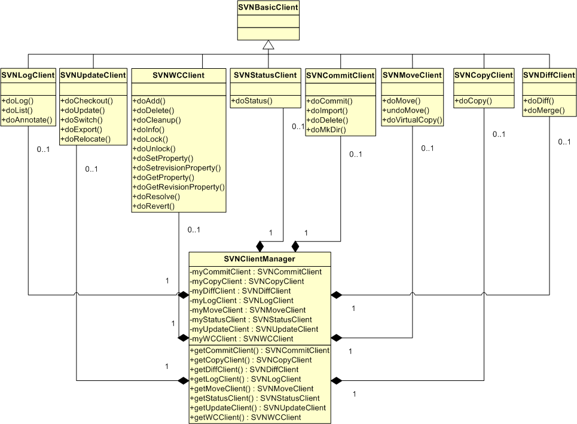

Managing A Working Copy
Finally we came to discussing the JavaSVN high-level API - the one for manipulating Working Copies. All Working Copy operations are logically organized in different SVN*Client classes. At the same time there's SVNClientManager class which composes all SVN*Client classes and, thus, simplifies work on creating and keeping various client classes:

So, you may instantiate different SVN*Client classes separately or keep a single SVNClientManager for the same purposes. In Fact, SVNClientManager instantiates each SVN*Client object at the first time you request it, but not earlier.
Methods of each SVN*Client class are similar to commands of the native Subversion command line client. We will show several simple operations you can perform upon Working Copies using JavaSVN. We write a class WorkingCopy which utilizes an SVNClientManager object:
...
public class WorkingCopy {
private static SVNClientManager ourClientManager;
...
Then go several demonstration functions that will be used in the main program. The following one creates a new directory immediately in a repository:
private static SVNCommitInfo makeDirectory(SVNURL url, String commitMessage) throws SVNException {
return ourClientManager.getCommitClient().doMkDir(new SVNURL[]{url}, commitMessage);
}
This one imports a local directory to a repository:
private static SVNCommitInfo importDirectory(File localPath, SVNURL dstURL, String commitMessage, boolean isRecursive) throws SVNException {
return ourClientManager.getCommitClient().doImport(localPath, dstURL, commitMessage, isRecursive);
}
This one recursively commits Working Copy modifications to a repository:
private static SVNCommitInfo commit(File wcPath, boolean keepLocks, String commitMessage) throws SVNException {
return ourClientManager.getCommitClient().doCommit(new File[] { wcPath }, keepLocks, commitMessage, false, true);
}
This one checks out a Working Copy given a repository url:
private static long checkout(SVNURL url, SVNRevision revision, File destPath, boolean isRecursive) throws SVNException {
SVNUpdateClient updateClient = ourClientManager.getUpdateClient();
/*
* sets externals not to be ignored during the checkout
*/
updateClient.setIgnoreExternals(false);
/*
* returns the number of the revision at which the working copy is
*/
return updateClient.doCheckout(url, destPath, revision, revision, isRecursive);
}
This one updates a Working Copy to a particular revision:
private static long update(File wcPath, SVNRevision updateToRevision, boolean isRecursive) throws SVNException {
SVNUpdateClient updateClient = ourClientManager.getUpdateClient();
/*
* sets externals not to be ignored during the update
*/
updateClient.setIgnoreExternals(false);
/*
* returns the number of the revision wcPath was updated to
*/
return updateClient.doUpdate(wcPath, updateToRevision, isRecursive);
}
This one switches a Working Copy to another url:
private static long switchToURL(File wcPath, SVNURL url, SVNRevision updateToRevision, boolean isRecursive) throws SVNException {
SVNUpdateClient updateClient = ourClientManager.getUpdateClient();
/*
* sets externals not to be ignored during the switch
*/
updateClient.setIgnoreExternals(false);
/*
* returns the number of the revision wcPath was updated to
*/
return updateClient.doSwitch(wcPath, url, updateToRevision, isRecursive);
}
This one recursively adds an existing local item under version control (schedules for addition):
private static void addEntry(File wcPath) throws SVNException {
ourClientManager.getWCClient().doAdd(wcPath, false, false, false, true);
}
This one locks a versioned item:
private static void lock(File wcPath, boolean isStealLock, String lockComment) throws SVNException {
ourClientManager.getWCClient().doLock(new File[] { wcPath }, isStealLock, lockComment);
}
This one deletes a versioned item from version control (schedules for deletion):
private static void delete(File wcPath, boolean force) throws SVNException {
ourClientManager.getWCClient().doDelete(wcPath, force, false);
}
This function copies or moves one location to another one within the same repository:
private static SVNCommitInfo copy(SVNURL srcURL, SVNURL dstURL, boolean isMove, String commitMessage) throws SVNException {
return ourClientManager.getCopyClient().doCopy(srcURL, SVNRevision.HEAD, dstURL, isMove, commitMessage);
}
We also need a function which will report us status (including remote status) of our Working Copy. The high-level API introduces several types of handlers to procees information on the fly. For our purposes we need to implement two handler interfaces so that we could perform status operations on our Working Copy: ISVNStatusHandler and ISVNEventHandler. This handler will receive status information about Working Copy items as a status client traverses the Working Copy tree:
...
public class StatusHandler implements ISVNStatusHandler, ISVNEventHandler {
private boolean myIsRemote;
public StatusHandler(boolean isRemote) {
myIsRemote = isRemote;
}
public void handleStatus(SVNStatus status) {
/*
* Gets the status of file/directory/symbolic link text contents.
* It is SVNStatusType who contains information on the state of an
* item.
*/
SVNStatusType contentsStatus = status.getContentsStatus();
String pathChangeType = " ";
boolean isAddedWithHistory = status.isCopied();
if (contentsStatus == SVNStatusType.STATUS_MODIFIED) {
/*
* The contents of the file have been Modified.
*/
pathChangeType = "M";
} else if (contentsStatus == SVNStatusType.STATUS_CONFLICTED) {
/*
* The item is in a state of Conflict.
*/
pathChangeType = "C";
} else if (contentsStatus == SVNStatusType.STATUS_DELETED) {
/*
* The item has been scheduled for Deletion from the repository.
*/
pathChangeType = "D";
} else if (contentsStatus == SVNStatusType.STATUS_ADDED) {
/*
* The item has been scheduled for Addition to the repository.
*/
pathChangeType = "A";
} else if (contentsStatus == SVNStatusType.STATUS_UNVERSIONED) {
/*
* The item is not under version control.
*/
pathChangeType = "?";
} else if (contentsStatus == SVNStatusType.STATUS_EXTERNAL) {
/*
* The item is unversioned, but is used by an eXternals definition.
*/
pathChangeType = "X";
} else if (contentsStatus == SVNStatusType.STATUS_IGNORED) {
/*
* The item is Ignored.
*/
pathChangeType = "I";
} else if (contentsStatus == SVNStatusType.STATUS_MISSING || contentsStatus == SVNStatusType.STATUS_INCOMPLETE) {
/*
* The file, directory or symbolic link item is under version
* control but is missing or somehow incomplete.
*/
pathChangeType = "!";
} else if (contentsStatus == SVNStatusType.STATUS_OBSTRUCTED) {
/*
* The item is in the repository as one kind of object,
* but what's actually in the user's working
* copy is some other kind.
*/
pathChangeType = "~";
} else if (contentsStatus == SVNStatusType.STATUS_REPLACED) {
/*
* The item was Replaced in the user's working copy; that is,
* the item was deleted, and a new item with the same name
* was added (within a single revision).
*/
pathChangeType = "R";
} else if (contentsStatus == SVNStatusType.STATUS_NONE || contentsStatus == SVNStatusType.STATUS_NORMAL) {
/*
* The item was not modified (normal).
*/
pathChangeType = " ";
}
/*
* If SVNStatusClient.doStatus(..) is invoked with remote = true the
* following code finds out whether the current item has been changed
* in the repository
*/
String remoteChangeType = " ";
if (status.getRemotePropertiesStatus() != SVNStatusType.STATUS_NONE || status.getRemoteContentsStatus() != SVNStatusType.STATUS_NONE) {
/*
* the local item is out of date
*/
remoteChangeType = "*";
}
/*
* Now getting the status of properties of an item. SVNStatusType also
* contains information on the properties state.
*/
SVNStatusType propertiesStatus = status.getPropertiesStatus();
/*
* Default - properties are normal (unmodified).
*/
String propertiesChangeType = " ";
if (propertiesStatus == SVNStatusType.STATUS_MODIFIED) {
/*
* Properties were modified.
*/
propertiesChangeType = "M";
} else if (propertiesStatus == SVNStatusType.STATUS_CONFLICTED) {
/*
* Properties are in conflict with the repository.
*/
propertiesChangeType = "C";
}
/*
* Whether the item was locked in the .svn working area (for example,
* during a commit or maybe the previous operation was interrupted, in
* this case the lock needs to be cleaned up).
*/
boolean isLocked = status.isLocked();
/*
* Whether the item is switched to a different URL (branch).
*/
boolean isSwitched = status.isSwitched();
/*
* If the item is a file it may be locked.
*/
SVNLock localLock = status.getLocalLock();
/*
* If doStatus() was run with remote = true and the item is a file,
* checks whether a remote lock presents.
*/
SVNLock remoteLock = status.getRemoteLock();
String lockLabel = " ";
if (localLock != null) {
/*
* at first suppose the file is locKed
*/
lockLabel = "K";
if (remoteLock != null) {
/*
* if the lock-token of the local lock differs from the lock-
* token of the remote lock - the lock was sTolen!
*/
if (!remoteLock.getID().equals(localLock.getID())) {
lockLabel = "T";
}
} else {
if(myIsRemote){
/*
* the local lock presents but there's no lock in the
* repository - the lock was Broken. This is true only if
* doStatus() was invoked with remote=true.
*/
lockLabel = "B";
}
}
} else if (remoteLock != null) {
/*
* the file is not locally locked but locked in the repository -
* the lock token is in some Other working copy.
*/
lockLabel = "O";
}
/*
* Obtains the working revision number of the item.
*/
long workingRevision = status.getRevision().getNumber();
/*
* Obtains the number of the revision when the item was last changed.
*/
long lastChangedRevision = status.getCommittedRevision().getNumber();
String offset = " ";
String[] offsets = new String[3];
offsets[0] = offset.substring(0, 6 - String.valueOf(workingRevision).length());
offsets[1] = offset.substring(0, 6 - String.valueOf(lastChangedRevision).length());
offsets[2] = offset.substring(0, offset.length() - (status.getAuthor() != null ? status.getAuthor().length() : 1));
/*
* status is shown in the manner of the native Subversion command line
* client's command "svn status"
*/
System.out.println(pathChangeType
+ propertiesChangeType
+ (isLocked ? "L" : " ")
+ (isAddedWithHistory ? "+" : " ")
+ (isSwitched ? "S" : " ")
+ lockLabel
+ " "
+ remoteChangeType
+ " "
+ workingRevision
+ offsets[0]
+ (lastChangedRevision >= 0 ? String.valueOf(lastChangedRevision) : "?") + offsets[1]
+ (status.getAuthor() != null ? status.getAuthor() : "?")
+ offsets[2] + status.getFile().getPath());
}
public void handleEvent(SVNEvent event, double progress) {
SVNEventAction action = event.getAction();
/*
* Print out the revision against which the status was performed. This
* event is dispatched when the SVNStatusClient.doStatus() was invoked
* with the flag remote set to true - that is for a local status it
* won't be dispatched.
*/
if(action == SVNEventAction.STATUS_COMPLETED){
System.out.println("Status against revision: "+ event.getRevision());
}
}
public void checkCancelled() throws SVNCancelException {
}
}
We use this handler in a status function:
private static void showStatus(File wcPath, boolean isRecursive, boolean isRemote, boolean isReportAll,
boolean isIncludeIgnored, boolean isCollectParentExternals) throws SVNException {
ourClientManager.getStatusClient().doStatus(wcPath, isRecursive, isRemote, isReportAll,
isIncludeIgnored, isCollectParentExternals,
new StatusHandler(isRemote));
}
For getting info on Working Copy items (like svn info command) we implement an
info handler:
...
public class InfoHandler implements ISVNInfoHandler {
public void handleInfo(SVNInfo info) {
System.out.println("-----------------INFO-----------------");
System.out.println("Local Path: " + info.getFile().getPath());
System.out.println("URL: " + info.getURL());
if (info.isRemote() && info.getRepositoryRootURL() != null) {
System.out.println("Repository Root URL: " + info.getRepositoryRootURL());
}
if(info.getRepositoryUUID() != null){
System.out.println("Repository UUID: " + info.getRepositoryUUID());
}
System.out.println("Revision: " + info.getRevision().getNumber());
System.out.println("Node Kind: " + info.getKind().toString());
if(!info.isRemote()){
System.out.println("Schedule: " + (info.getSchedule() != null ? info.getSchedule() : "normal"));
}
System.out.println("Last Changed Author: " + info.getAuthor());
System.out.println("Last Changed Revision: " + info.getCommittedRevision().getNumber());
System.out.println("Last Changed Date: " + info.getCommittedDate());
if (info.getPropTime() != null) {
System.out.println("Properties Last Updated: " + info.getPropTime());
}
if (info.getKind() == SVNNodeKind.FILE && info.getChecksum() != null) {
if (info.getTextTime() != null) {
System.out.println("Text Last Updated: " + info.getTextTime());
}
System.out.println("Checksum: " + info.getChecksum());
}
if (info.getLock() != null) {
if (info.getLock().getID() != null) {
System.out.println("Lock Token: " + info.getLock().getID());
}
System.out.println("Lock Owner: " + info.getLock().getOwner());
System.out.println("Lock Created: " + info.getLock().getCreationDate());
if (info.getLock().getExpirationDate() != null) {
System.out.println("Lock Expires: " + info.getLock().getExpirationDate());
}
if (info.getLock().getComment() != null) {
System.out.println("Lock Comment: " + info.getLock().getComment());
}
}
}
}
Which we then use in our info function:
private static void showInfo(File wcPath, SVNRevision revision, boolean isRecursive) throws SVNException {
ourClientManager.getWCClient().doInfo(wcPath, revision, isRecursive, new InfoHandler());
}
We also use several hooks (event handlers) to display progress information in a console while an operation is running. We implement handlers for the following operations: update, commit, several local operations (add, delete, lock, etc.):
...
public class UpdateEventHandler implements ISVNEventHandler {
public void handleEvent(SVNEvent event, double progress) {
/*
* Gets the current action. An action is represented by SVNEventAction.
* In case of an update an action can be determined via comparing
* SVNEvent.getAction() and SVNEventAction.UPDATE_-like constants.
*/
SVNEventAction action = event.getAction();
String pathChangeType = " ";
if (action == SVNEventAction.UPDATE_ADD) {
/*
* the item was added
*/
pathChangeType = "A";
} else if (action == SVNEventAction.UPDATE_DELETE) {
/*
* the item was deleted
*/
pathChangeType = "D";
} else if (action == SVNEventAction.UPDATE_UPDATE) {
/*
* Find out in details what state the item is (after having been
* updated).
*
* Gets the status of file/directory item contents. It is
* SVNStatusType who contains information on the state of an item.
*/
SVNStatusType contentsStatus = event.getContentsStatus();
if (contentsStatus == SVNStatusType.CHANGED) {
/*
* the item was modified in the repository (got the changes
* from the repository
*/
pathChangeType = "U";
}else if (contentsStatus == SVNStatusType.CONFLICTED) {
/*
* The file item is in a state of Conflict. That is, changes
* received from the repository during an update, overlap with
* local changes the user has in his working copy.
*/
pathChangeType = "C";
} else if (contentsStatus == SVNStatusType.MERGED) {
/*
* The file item was merGed (those changes that came from the
* repository did not overlap local changes and were merged
* into the file).
*/
pathChangeType = "G";
}
} else if (action == SVNEventAction.UPDATE_EXTERNAL) {
/*for externals definitions*/
System.out.println("Fetching external item into '" + event.getFile().getAbsolutePath() + "'");
System.out.println("External at revision " + event.getRevision());
return;
} else if (action == SVNEventAction.UPDATE_COMPLETED) {
/*
* Working copy update is completed. Prints out the revision.
*/
System.out.println("At revision " + event.getRevision());
return;
} else if (action == SVNEventAction.ADD){
System.out.println("A " + event.getPath());
return;
} else if (action == SVNEventAction.DELETE){
System.out.println("D " + event.getPath());
return;
} else if (action == SVNEventAction.LOCKED){
System.out.println("L " + event.getPath());
return;
} else if (action == SVNEventAction.LOCK_FAILED){
System.out.println("failed to lock " + event.getPath());
return;
}
/*
* Status of properties of an item. SVNStatusType also
* contains information on the properties state.
*/
SVNStatusType propertiesStatus = event.getPropertiesStatus();
String propertiesChangeType = " ";
if (propertiesStatus == SVNStatusType.CHANGED) {
/*
* Properties were updated.
*/
propertiesChangeType = "U";
} else if (propertiesStatus == SVNStatusType.CONFLICTED) {
/*
* Properties are in conflict with the repository.
*/
propertiesChangeType = "C";
} else if (propertiesStatus == SVNStatusType.MERGED) {
/*
* Properties that came from the repository were merged with the
* local ones.
*/
propertiesChangeType = "G";
}
/*
* Gets the status of the lock.
*/
String lockLabel = " ";
SVNStatusType lockType = event.getLockStatus();
if (lockType == SVNStatusType.LOCK_UNLOCKED) {
/*
* The lock is broken by someone.
*/
lockLabel = "B";
}
System.out.println(pathChangeType + propertiesChangeType + lockLabel + " " + event.getPath());
}
public void checkCancelled() throws SVNCancelException {
}
}
...
public class CommitEventHandler implements ISVNEventHandler {
public void handleEvent(SVNEvent event, double progress) {
SVNEventAction action = event.getAction();
if (action == SVNEventAction.COMMIT_MODIFIED) {
System.out.println("Sending " + event.getPath());
} else if (action == SVNEventAction.COMMIT_DELETED) {
System.out.println("Deleting " + event.getPath());
} else if (action == SVNEventAction.COMMIT_REPLACED) {
System.out.println("Replacing " + event.getPath());
} else if (action == SVNEventAction.COMMIT_DELTA_SENT) {
System.out.println("Transmitting file data....");
} else if (action == SVNEventAction.COMMIT_ADDED) {
/*
* Gets the MIME-type of the item.
*/
String mimeType = event.getMimeType();
if (SVNProperty.isBinaryMimeType(mimeType)) {
/*
* If the item is a binary file
*/
System.out.println("Adding (bin) " + event.getPath());
} else {
System.out.println("Adding " + event.getPath());
}
}
}
public void checkCancelled() throws SVNCancelException {
}
}
...
public class WCEventHandler implements ISVNEventHandler {
public void handleEvent(SVNEvent event, double progress) {
SVNEventAction action = event.getAction();
if (action == SVNEventAction.ADD){
/*
* The item is scheduled for addition.
*/
System.out.println("A " + event.getPath());
return;
}else if (action == SVNEventAction.COPY){
/*
* The item is scheduled for addition with history (copied, in
* other words).
*/
System.out.println("A + " + event.getPath());
return;
}else if (action == SVNEventAction.DELETE){
/*
* The item is scheduled for deletion.
*/
System.out.println("D " + event.getPath());
return;
} else if (action == SVNEventAction.LOCKED){
/*
* The item is locked.
*/
System.out.println("L " + event.getPath());
return;
} else if (action == SVNEventAction.LOCK_FAILED){
/*
* Locking operation failed.
*/
System.out.println("failed to lock " + event.getPath());
return;
}
}
public void checkCancelled() throws SVNCancelException {
}
}
There are also two auxiliary functions: one for handling errors
private static void error(String message, Exception e){
System.err.println(message + (e != null ? ": " + e.getMessage() : ""));
System.exit(1);
}
and one for creating some local dummy file/directory trees:
private static final void createLocalDir(File aNewDir, File[] localFiles, String[] fileContents){
if (!aNewDir.mkdirs()) {
error("failed to create a new directory '" + aNewDir.getAbsolutePath() + "'.", null);
}
for(int i=0; i < localFiles.length; i++){
File aNewFile = localFiles[i];
try {
if (!aNewFile.createNewFile()) {
error("failed to create a new file '" + aNewFile.getAbsolutePath() + "'.", null);
}
} catch (IOException ioe) {
aNewFile.delete();
error("error while creating a new file '" + aNewFile.getAbsolutePath() + "'", ioe);
}
String contents = null;
if(i > fileContents.length-1){
continue;
}
contents = fileContents[i];
/*
* writing a text into the file
*/
FileOutputStream fos = null;
try {
fos = new FileOutputStream(aNewFile);
fos.write(contents.getBytes());
} catch (FileNotFoundException fnfe) {
error("the file '" + aNewFile.getAbsolutePath() + "' is not found", fnfe);
} catch (IOException ioe) {
error("error while writing into the file '" + aNewFile.getAbsolutePath() + "'", ioe);
} finally {
if (fos != null) {
try {
fos.close();
} catch (IOException ioe) {
//
}
}
}
}
}
And now, step by step, we demonstrate using all these functions in a main program. Firts of all, we need some initializations to be performed:
...
public class WorkingCopy {
private static SVNClientManager ourClientManager;
private static ISVNEventHandler myCommitEventHandler;
private static ISVNEventHandler myUpdateEventHandler;
private static ISVNEventHandler myWCEventHandler;
public static void main(String[] args) throws SVNException {
FSRepositoryFactory.setup();
SVNURL repositoryURL = null;
try {
repositoryURL = SVNURL.parseURIEncoded("file://localhost/testRep");
} catch (SVNException e) {
//
}
String myWorkingCopyPath = "/MyWorkingCopy";
String importDir = "/importDir";
String importFile = importDir + "/importFile.txt";
String importFileText = "This unversioned file is imported into a repository";
String newDir = "/newDir";
String newFile = newDir + "/newFile.txt";
String fileText = "This is a new file added to the working copy";
/*
* That's where a new directory will be created
*/
SVNURL url = repositoryURL.appendPath("MyRepos", false);
/*
* That's where '/MyRepos' will be copied to (branched)
*/
SVNURL copyURL = repositoryURL.appendPath("MyReposCopy", false);
/*
* That's where a local directory will be imported into.
* Note that it's not necessary that the '/importDir' directory must already
* exist - it will created if necessary.
*/
SVNURL importToURL = url.appendPath(importDir, false);
/*
* Creating custom handlers that will process events
*/
myCommitEventHandler = new CommitEventHandler();
myUpdateEventHandler = new UpdateEventHandler();
myWCEventHandler = new WCEventHandler();
/*
* Creates a default run-time configuration options driver. Default options
* created in this way use the Subversion run-time configuration area (for
* instance, on a Windows platform it can be found in the '%APPDATA%\Subversion'
* directory).
*
* readonly = true - not to save any configuration changes that can be done
* during the program run to a config file (config settings will only
* be read to initialize; to enable changes the readonly flag should be set
* to false).
*
* SVNWCUtil is a utility class that creates a default options driver.
*/
ISVNOptions options = SVNWCUtil.createDefaultOptions(true);
ISVNAuthenticationManager authManager = SVNWCUtil.createDefaultAuthenticationManager();
/*
* Creates an instance of SVNClientManager providing a default auth
* manager and an options driver
*/
ourClientManager = SVNClientManager.newInstance(options, authManager);
/*
* Registers a commit event handler
*/
ourClientManager.getCommitClient().setEventHandler(myCommitEventHandler);
/*
* Registers an update event handler
*/
ourClientManager.getUpdateClient().setEventHandler(myUpdateEventHandler);
/*
* Registers a WC event handler
*/
ourClientManager.getWCClient().setEventHandler(myWCEventHandler);
...
Then (listing main actions):
1.First we make a directory in our repository

2. Then we import a local dummy directory into it

3. Then we
- checkout MyRepos,
- locally add a new directory into the Working Copy and
- commit it to the repository

4. Then we copy MyRepos to a new location - MyReposCopy

5. Then we
- switch the Working Copy to MyReposCopy,
- locally delete newDir and
- commit it to the repository

The same steps (marked with numbers to the left) in code:
...
long committedRevision = -1;
System.out.println("Making a new directory at '" + url + "'...");
try{
/*
* creates a new version comtrolled directory in a repository and
* displays what revision the repository was committed to
*/
1 committedRevision = makeDirectory(url, "making a new directory at '" + url + "'").getNewRevision();
}catch(SVNException svne){
error("error while making a new directory at '" + url + "'", svne);
}
System.out.println("Committed to revision " + committedRevision);
System.out.println();
File anImportDir = new File(importDir);
File anImportFile = new File(anImportDir, SVNPathUtil.tail(importFile));
/*
* creates a new local directory - './importDir' and a new file -
* './importDir/importFile.txt' that will be imported into the repository
* into the '/MyRepos/importDir' directory
*/
createLocalDir(anImportDir, new File[]{anImportFile}, new String[]{importFileText});
System.out.println("Importing a new directory into '" + importToURL + "'...");
try{
/*
* recursively imports an unversioned directory into a repository
* and displays what revision the repository was committed to
*/
boolean isRecursive = true;
2 committedRevision = importDirectory(anImportDir, importToURL, "importing a new directory '" + anImportDir.getAbsolutePath() + "'", isRecursive).getNewRevision();
}catch(SVNException svne){
error("error while importing a new directory '" + anImportDir.getAbsolutePath() + "' into '" + importToURL + "'", svne);
}
System.out.println("Committed to revision " + committedRevision);
System.out.println();
/*
* creates a local directory where the working copy will be checked out into
*/
File wcDir = new File(myWorkingCopyPath);
if (wcDir.exists()) {
error("the destination directory '"
+ wcDir.getAbsolutePath() + "' already exists!", null);
}
wcDir.mkdirs();
System.out.println("Checking out a working copy from '" + url + "'...");
try {
/*
* recursively checks out a working copy from url into wcDir.
* SVNRevision.HEAD means the latest revision to be checked out.
*/
3.1 checkout(url, SVNRevision.HEAD, wcDir, true);
} catch (SVNException svne) {
error("error while checking out a working copy for the location '"
+ url + "'", svne);
}
System.out.println();
/*
* recursively displays info for wcDir at the current working revision
* in the manner of 'svn info -R' command
*/
try {
showInfo(wcDir, SVNRevision.WORKING, true);
} catch (SVNException svne) {
error("error while recursively getting info for the working copy at'"
+ wcDir.getAbsolutePath() + "'", svne);
}
System.out.println();
File aNewDir = new File(wcDir, newDir);
File aNewFile = new File(aNewDir, SVNPathUtil.tail(newFile));
/*
* creates a new local directory - 'wcDir/newDir' and a new file -
* '/MyWorkspace/newDir/newFile.txt'
*/
createLocalDir(aNewDir, new File[]{aNewFile}, new String[]{fileText});
System.out.println("Recursively scheduling a new directory '" + aNewDir.getAbsolutePath() + "' for addition...");
try {
/*
* recursively schedules aNewDir for addition
*/
3.2 addEntry(aNewDir);
} catch (SVNException svne) {
error("error while recursively adding the directory '"
+ aNewDir.getAbsolutePath() + "'", svne);
}
System.out.println();
boolean isRecursive = true;
boolean isRemote = true;
boolean isReportAll = false;
boolean isIncludeIgnored = true;
boolean isCollectParentExternals = false;
System.out.println("Status for '" + wcDir.getAbsolutePath() + "':");
try {
/*
* gets and shows status information for the WC directory.
* status will be recursive on wcDir, will also cover the repository,
* won't cover unmodified entries, will disregard 'svn:ignore' property
* ignores (if any), will ignore externals definitions.
*/
showStatus(wcDir, isRecursive, isRemote, isReportAll,
isIncludeIgnored, isCollectParentExternals);
} catch (SVNException svne) {
error("error while recursively performing status for '"
+ wcDir.getAbsolutePath() + "'", svne);
}
System.out.println();
System.out.println("Updating '" + wcDir.getAbsolutePath() + "'...");
try {
/*
* recursively updates wcDir to the latest revision (SVNRevision.HEAD)
*/
update(wcDir, SVNRevision.HEAD, true);
} catch (SVNException svne) {
error("error while recursively updating the working copy at '"
+ wcDir.getAbsolutePath() + "'", svne);
}
System.out.println("");
System.out.println("Committing changes for '" + wcDir.getAbsolutePath() + "'...");
try {
/*
* commits changes in wcDir to the repository with not leaving items
* locked (if any) after the commit succeeds; this will add aNewDir &
* aNewFile to the repository.
*/
3.3 committedRevision = commit(wcDir, false, "'/newDir' with '/newDir/newFile.txt' were added").getNewRevision();
} catch (SVNException svne) {
error("error while committing changes to the working copy at '"
+ wcDir.getAbsolutePath()
+ "'", svne);
}
System.out.println("Committed to revision " + committedRevision);
System.out.println();
System.out
.println("Locking (with stealing if the entry is already locked) '"
+ aNewFile.getAbsolutePath() + "'.");
try {
/*
* locks aNewFile with stealing (if it has been already locked by someone
* else), providing a lock comment
*/
lock(aNewFile, true, "locking '/newDir/newFile.txt'");
} catch (SVNException svne) {
error("error while locking the working copy file '"
+ aNewFile.getAbsolutePath() + "'", svne);
}
System.out.println();
System.out.println("Status for '" + wcDir.getAbsolutePath() + "':");
try {
/*
* displays status once again to see the file is really locked
*/
showStatus(wcDir, isRecursive, isRemote, isReportAll,
isIncludeIgnored, isCollectParentExternals);
} catch (SVNException svne) {
error("error while recursively performing status for '"
+ wcDir.getAbsolutePath() + "'", svne);
}
System.out.println();
System.out.println("Copying '" + url + "' to '" + copyURL + "'...");
try {
/*
* makes a branch of url at copyURL - that is URL->URL copying
* with history
*/
4 committedRevision = copy(url, copyURL, false,
"remotely copying '" + url + "' to '" + copyURL + "'")
.getNewRevision();
} catch (SVNException svne) {
error("error while copying '" + url + "' to '"
+ copyURL + "'", svne);
}
/*
* displays what revision the repository was committed to
*/
System.out.println("Committed to revision " + committedRevision);
System.out.println();
System.out.println("Switching '" + wcDir.getAbsolutePath() + "' to '"
+ copyURL + "'...");
try {
/*
* recursively switches wcDir to copyURL in the latest revision
* (SVNRevision.HEAD)
*/
5.1 switchToURL(wcDir, copyURL, SVNRevision.HEAD, true);
} catch (SVNException svne) {
error("error while switching '"
+ wcDir.getAbsolutePath() + "' to '" + copyURL + "'", svne);
}
System.out.println();
/*
* recursively displays info for the working copy once again to see
* it was really switched to a new URL
*/
try {
showInfo(wcDir, SVNRevision.WORKING, true);
} catch (SVNException svne) {
error("error while recursively getting info for the working copy at'"
+ wcDir.getAbsolutePath() + "'", svne);
}
System.out.println();
System.out.println("Scheduling '" + aNewDir.getAbsolutePath() + "' for deletion ...");
try {
/*
* schedules aNewDir for deletion (with forcing)
*/
5.2 delete(aNewDir, true);
} catch (SVNException svne) {
error("error while schediling '"
+ wcDir.getAbsolutePath() + "' for deletion", svne);
}
System.out.println();
System.out.println("Status for '" + wcDir.getAbsolutePath() + "':");
try {
/*
* recursively displays status once more to see whether aNewDir
* was really scheduled for deletion
*/
showStatus(wcDir, isRecursive, isRemote, isReportAll,
isIncludeIgnored, isCollectParentExternals);
} catch (SVNException svne) {
error("error while recursively performing status for '"
+ wcDir.getAbsolutePath() + "'", svne);
}
System.out.println();
System.out.println("Committing changes for '" + wcDir.getAbsolutePath() + "'...");
try {
/*
* lastly commits changes in wcDir to the repository; all items that
* were locked by the user (if any) will be unlocked after the commit
* succeeds; this commit will remove aNewDir from the repository.
*/
5.3 committedRevision = commit(
wcDir,
false,
"deleting '" + aNewDir.getAbsolutePath()
+ "' from the filesystem as well as from the repository").getNewRevision();
} catch (SVNException svne) {
error("error while committing changes to the working copy '"
+ wcDir.getAbsolutePath()
+ "'", svne);
}
System.out.println("Committed to revision " + committedRevision);
System.exit(0);
}
And if the program runs successfully you'll see in your console the following output:
Making a new directory at 'file:///G:/testRep/MyRepos'...
Committed to revision 5
Importing a new directory into 'file:///G:/testRep/MyRepos/importDir'...
Adding importFile.txt
Committed to revision 6
Checking out a working copy from 'file:///G:/testRep/MyRepos'...
A importDir
AU importDir/importFile.txt
At revision 6
-----------------INFO-----------------
Local Path: G:\MyWorkingCopy
URL: file:///G:/testRep/MyRepos
Repository UUID: bcf16199-7f9e-be47-a3e5-e4d194b5d0ae
Revision: 6
Node Kind: dir
Schedule: normal
Last Changed Author: userName
Last Changed Revision: 6
Last Changed Date: Fri Jul 07 16:19:37 NOVST 2006
-----------------INFO-----------------
Local Path: G:\MyWorkingCopy\importDir
URL: file:///G:/testRep/MyRepos/importDir
Repository UUID: bcf16199-7f9e-be47-a3e5-e4d194b5d0ae
Revision: 6
Node Kind: dir
Schedule: normal
Last Changed Author: userName
Last Changed Revision: 6
Last Changed Date: Fri Jul 07 16:19:37 NOVST 2006
-----------------INFO-----------------
Local Path: G:\MyWorkingCopy\importDir\importFile.txt
URL: file:///G:/testRep/MyRepos/importDir/importFile.txt
Repository UUID: bcf16199-7f9e-be47-a3e5-e4d194b5d0ae
Revision: 6
Node Kind: file
Schedule: normal
Last Changed Author: userName
Last Changed Revision: 6
Last Changed Date: Fri Jul 07 16:19:37 NOVST 2006
Properties Last Updated: Fri Jul 07 16:19:38 NOVST 2006
Text Last Updated: Fri Jul 07 16:19:37 NOVST 2006
Checksum: 75e9e68e21ae4453f318424738aef57e
Recursively scheduling a new directory 'G:\MyWorkingCopy\newDir' for addition...
A newDir
A newDir/newFile.txt
Status for 'G:\MyWorkingCopy':
A 0 ? ? G:\MyWorkingCopy\newDir\newFile.txt
A 0 ? ? G:\MyWorkingCopy\newDir
Updating 'G:\MyWorkingCopy'...
At revision 6
Committing changes for 'G:\MyWorkingCopy'...
Adding newDir
Adding newDir/newFile.txt
Transmitting file data....
Committed to revision 7
Locking (with stealing if the entry is already locked) 'G:\MyWorkingCopy\newDir\newFile.txt'.
L newFile.txt
Status for 'G:\MyWorkingCopy':
K 7 7 userName G:\MyWorkingCopy\newDir\newFile.txt
Copying 'file:///G:/testRep/MyRepos' to 'file:///G:/testRep/MyReposCopy'...
Committed to revision 8
Switching 'G:\MyWorkingCopy' to 'file:///G:/testRep/MyReposCopy'...
B newDir/newFile.txt
At revision 8
-----------------INFO-----------------
Local Path: G:\MyWorkingCopy
URL: file:///G:/testRep/MyReposCopy
Repository UUID: bcf16199-7f9e-be47-a3e5-e4d194b5d0ae
Revision: 8
Node Kind: dir
Schedule: normal
Last Changed Author: userName
Last Changed Revision: 8
Last Changed Date: Fri Jul 07 16:19:42 NOVST 2006
-----------------INFO-----------------
Local Path: G:\MyWorkingCopy\importDir
URL: file:///G:/testRep/MyReposCopy/importDir
Repository UUID: bcf16199-7f9e-be47-a3e5-e4d194b5d0ae
Revision: 8
Node Kind: dir
Schedule: normal
Last Changed Author: userName
Last Changed Revision: 6
Last Changed Date: Fri Jul 07 16:19:37 NOVST 2006
-----------------INFO-----------------
Local Path: G:\MyWorkingCopy\importDir\importFile.txt
URL: file:///G:/testRep/MyReposCopy/importDir/importFile.txt
Repository UUID: bcf16199-7f9e-be47-a3e5-e4d194b5d0ae
Revision: 8
Node Kind: file
Schedule: normal
Last Changed Author: userName
Last Changed Revision: 6
Last Changed Date: Fri Jul 07 16:19:37 NOVST 2006
Properties Last Updated: Fri Jul 07 16:19:38 NOVST 2006
Text Last Updated: Fri Jul 07 16:19:37 NOVST 2006
Checksum: 75e9e68e21ae4453f318424738aef57e
-----------------INFO-----------------
Local Path: G:\MyWorkingCopy\newDir
URL: file:///G:/testRep/MyReposCopy/newDir
Repository UUID: bcf16199-7f9e-be47-a3e5-e4d194b5d0ae
Revision: 8
Node Kind: dir
Schedule: normal
Last Changed Author: userName
Last Changed Revision: 7
Last Changed Date: Fri Jul 07 16:19:41 NOVST 2006
-----------------INFO-----------------
Local Path: G:\MyWorkingCopy\newDir\newFile.txt
URL: file:///G:/testRep/MyReposCopy/newDir/newFile.txt
Repository UUID: bcf16199-7f9e-be47-a3e5-e4d194b5d0ae
Revision: 8
Node Kind: file
Schedule: normal
Last Changed Author: userName
Last Changed Revision: 7
Last Changed Date: Fri Jul 07 16:19:41 NOVST 2006
Properties Last Updated: Fri Jul 07 16:19:40 NOVST 2006
Text Last Updated: Fri Jul 07 16:19:40 NOVST 2006
Checksum: 023b67e9660b2faabaf84b10ba32c6cf
Scheduling 'G:\MyWorkingCopy\newDir' for deletion ...
D newDir/newFile.txt
D newDir
Status for 'G:\MyWorkingCopy':
D 8 7 userName G:\MyWorkingCopy\newDir\newFile.txt
D 8 7 userName G:\MyWorkingCopy\newDir
Committing changes for 'G:\MyWorkingCopy'...
Deleting newDir
Committed to revisioDownload the full sources of this example program: